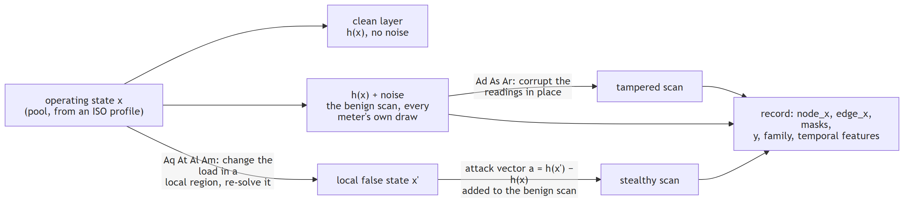

Concepts to code¶
Paper ideas → the function that implements them. Pair with DATA_DICTIONARY.md.
Paths are under src/fdia_graph/.
One record, start to finish¶

Every attack is built in engine.attacks, the generator's AttackMixin: a local false state
(engine.attacks.false_state) designed per episode by the family's designer (RampDesigner for At,
OverloadDesigner for Am, engine.attacks.episodes) on a support the search or [WU26]'s row reduction
chooses (SearchSupport, RrefSupport); engine.records.attack_frame adds the attack vector to the
benign scan.
Modules¶
The paper's math lives in engine/. generation/ drives it in stages, timeline.py orchestrates
them, profiles.py turns load series into operating points; se/ and localization/ analyze the
timelines; the rest load and serve data. The table is generated from each module's docstring
(tools/equation_map.py); DECISIONS.md and the "[WU26] equations to code" section of
FORMULAS.md map the paper to the code.
| module | what it holds |
|---|---|
fdia_graph |
fdia-graph — load & generate ML-only dangerous FDIA localization datasets (realistic measurement graphs). |
_moved |
Names that moved to another module and stay importable from the old one for one minor release. |
dataset |
FdiaGraph: a PyTorch-ready dataset over one HDF5 file, a timeline (0.18+, one row per frame in time order, kind="timeline") or a record shard (the v0.7.2 release). |
dataset.base |
The loader's shared state and the constants its concerns read. |
dataset.export |
A whole split at once: summary, and the arrays/tensors/frames of every kept record. |
dataset.graph |
The static graph of a shard: connectivity and the per-branch and per-bus physics, as tensors. |
dataset.physics |
The admittance matrices built from the static graph, and the clean power flow on every branch derived from the clean state through them. |
dataset.records |
One record at a time: unit conversion, __getitem__ in dict/PyG form, collate, and a ready DataLoader. |
dataset.sequence |
The timeline as sequences: sliding windows over a time-ordered view, and the episode table. |
download |
Fetch built-in shards from the GitHub Release and cache them under ~/.cache/fdia_graph. |
engine |
The generation engine — the math/physics/theory half of the SDK, behind fg.generate(). |
engine.attacks |
Every attack the generator builds, behind one mixin: AttackMixin, mixed into FdiaGenerator. |
engine.attacks.area |
The attacker's area: the subnetwork a stealthy attack re-solves, and the boundary it holds true. |
engine.attacks.certify |
Certifying the fewest-tamper attack [WU26 eq. 12] by convex relaxation (docs/plans/RELAX_CERTIFIER_PLAN.md). |
engine.attacks.episodes |
What one episode attacks: its design, drawn at onset by the family's designer. |
engine.attacks.false_state |
The local false state of a stealthy attack: the attacker's area re-solved under false loads with the boundary held true, checked against the operating limits, and the attack vector it writes. |
engine.attacks.minimize |
The fewest-tamper support of an attack window [WU26 eq. 12]. |
engine.attacks.overload |
Am, the multi-snapshot overload attack of [WU26]: the reported flows of its target branches (two by default, as the paper's case studies overload two lines at once, or one; OverloadSettings.n_lines, [D17]) driven to their ratings over the window, with the fewest devices tampered. |
engine.attacks.relax_cuts |
The valid cuts that tighten the certifier's relaxation (docs/plans/RELAX_CERTIFIER_PLAN.md, section 2.1), each family a function of the relaxation it tightens: |
engine.attacks.rref |
[WU26]'s own construction of the attack's support: row reduction of the transposed attack-area Jacobian with column exchanges. |
engine.attacks.stealthy |
The stealthy ramp At: one scan at a time, a local false state added to the true scan. |
engine.base |
Shared state contract for FdiaGenerator's mixins — attribute + cross-method annotations only. |
engine.core |
Dataset generation engine (attack simulation + realistic measurement emission). |
engine.measurement |
Measurement emission: turn a grid state into meter readings (the measurement function h(x)). |
engine.physics |
A scan's load and generation, read from its stored state. |
engine.pp_types |
The pandapower objects the engine reads, as types. |
engine.records |
One scan of the timeline writer: a benign scan, or an attacked At scan built by engine.attacks. |
errors |
Every error the package raises on purpose, in one place. |
federated |
Federated training over K clients (utilities) that never pool their records [FED26]. |
federated.aggregate |
Averaging torch state dicts across clients with formulas.federated.fedavg [MCM17]. |
federated.localizer |
Federated per-bus localizers: the paper's BusMLP and BusCNN trained by FedAvg over K clients [MCM17], [FED26], with records never leaving a client. |
federated.partition |
The split of a system's buses into K clients (utilities) for federated training [FED26]. |
federated.se |
Federated fitting of the state estimator's learned part [EST26], [FED26]. |
formulas |
The mathematics of the package as named, pure functions: numpy in, numpy out, no files, no dataset objects, no torch. Each function carries its equation and a source key from docs/reference/REFERENCES.md; docs/reference/FORMULAS.md is the catalogue. |
formulas.attacks |
Attack shapes defined by the dataset [DAT26] that are pure functions of their parameters. |
formulas.estimation |
Weighted least squares state estimation and its robust variants, one function per equation [SCH70], [HAN75], [HUB64], [EST26]. |
formulas.federated |
Statistics that combine across federated clients without moving their records [FED26]. |
formulas.linalg |
Numerical linear algebra the estimators lean on: a guarded inverse of a normal matrix, its condition number without an eigen-decomposition, and per-record normal matrices in sub-batches. |
formulas.metrics |
Per-bus localization metrics from confusion counts, so they can be summed across clients or thresholds before any ratio is taken [KEC25]. |
formulas.network |
The AC network model: branch admittances, bus injections and branch flows [AE04, ch. 2], [MP19]. |
formulas.noise |
The meter error model: accuracy-class standard deviations split into a constant per-meter bias and a per-scan jitter [ASP14], our split. |
formulas.projection |
Projections through the measurement Jacobian: the explained and unexplained parts of a measurement change, leverage, the weak directions, and the meter-to-bus aggregation of the Jacobian-informed features [JAC26], [HAN75]. |
formulas.relax |
The pieces of the convex relaxation that certifies the fewest-tamper attack (docs/plans/RELAX_CERTIFIER_PLAN.md): the voltage box, the big-M constants derived from it, the sectors that outer-approximate the exterior of a circle, the cone gap that says how tight a relaxed point's pairwise cones are, and the roundoff slack that keeps the search's float32 noise thresholds reproduced conservatively. numpy only; the model itself is built in engine/attacks/certify.py. |
formulas.temporal |
The temporal features of a scan [FED26]: the one-step injection change and its z-score against the bus's typical recent change, and the recent-change scale itself. |
formulas.trust |
Trusted-meter selection against stealthy attacks [WU26]: the attack subspace a secured set leaves open, the cost of the cheapest attack in it, and the greedy selection that closes it. |
generation |
generate(system, name, **knobs) — build a custom dataset and register it as name. |
generation.design |
The design stage of a timeline: the overload Am episodes of a split, designed before it is walked. |
generation.emit |
The emit stage of a timeline: every frame in time order, benign or under its episode's design. |
generation.plan |
The plan stage of a timeline: where its splits are cut and where each split's episodes go. |
generation.write |
The write stage of a timeline: its datasets, columns, episodes and attributes in the HDF5 file. |
localization |
Per-bus FDIA localization on fdia-graph datasets, sklearn style. |
localization.base |
Per-bus FDIA localization on fdia-graph datasets — the shared machinery behind every method class. |
localization.learned |
Learned per-bus localizers: the graph-free encoders that gave the best localization numbers in the federated localization paper, on that paper's 14-dim per-bus feature vector. |
localization.methods |
The localizer method classes. Each changes exactly one thing about LocalizerBase — the per-bus score — so a difference between two arms is a difference between detection signals, not between calibration or metrics code. |
models |
Every data model of the package in one place. |
models.assets |
How files are found: where a dataset comes from, where its bytes are fetched from, and one line of the N-1 candidate list. |
models.base |
Bundle: a typed record that still IS the dict it used to be. |
models.choices |
Every argument that takes one value from a fixed set, in one place. |
models.config |
The settings every consumer accepts, one model each, checked when built (models.validation). |
models.data |
What a user gets back: one record, a batch, a whole split, a summary, a stream, the episode table, and the per-record truth an estimator is scored against. Each is a Bundle, so it is still the dict it always was. |
models.errors |
The named errors of conditions only the data reveals, beside ConfigError so a model can raise one (Validated.error). fdia_graph.errors re-exports every one. |
models.federated |
What the federated layer passes around: how the buses split into clients. |
models.fields |
The field groups the data bundles share. |
models.frames |
What the generator passes around per scan: a measurement scan, the emitted frame with its labels, the run's attack knobs, the design of an At ramp and of an Am overload episode, and what the fewest-tamper search and the certifier return. |
models.grid |
The static description of a system: the per-branch pi model and the admittance matrices built from it, which meters exist, the constant meter bias, and the N-1 contingency a generator was built with. Nothing here changes from one scan to the next. |
models.inputs |
What the formulas and the parsers accept, one model each, checked when built (models.validation). |
models.results |
The models of a results table: the metric registry, a Record (one measured value with the keys that say what it is) and a Provenance (which run made it), plus the parsers that read loose input (a nested score report, a filter value, a run's settings) by its type. Every check lives here, per the validation rule, so a store never holds an unknown metric, a non-finite value or a malformed key; fdia_graph.results builds these models and never checks its input itself. |
models.scores |
The result tables: an estimator's error pair per record class, a localizer's metric rows per class, and the Jacobian feature outputs. Each is a Bundle, indexable by family name as before. |
models.training |
What the learned localizers pass between their fitting pieces (a centralized fit and a federated client share them). |
models.validation |
The one place inputs are checked (CONTRIBUTING.md, "an input is checked in one place"). |
profiles |
Load-profile ingestion + operating-state generation — the FRONT of the pipeline. |
ratings |
Branch thermal ratings for the overload attack of [WU26] (eqs. 24-25), stored with the package. |
registry |
Dataset registry: built-in (downloadable) datasets + locally generated ones. |
results |
Measured results as data: typed records with their provenance, one tidy store, and the renderers that put the numbers into docs and figures, so no measured number is typed by hand. |
results.docs |
Measured numbers in markdown come from the store, never from a keyboard. |
results.render |
Turning records into what a reader sees: a formatted cell, a markdown table, a pivot of records by two keys, and the CSV sidecar a figure is drawn from. Nothing here measures or stores anything. |
results.run |
How a harness records what it measured: open a Run, add values, and the run writes them to the store with its provenance when it closes. |
results.store |
The results store: one tidy CSV per experiment plus one table of runs, in a folder kept in git. |
se |
State estimation on fdia-graph datasets, sklearn style. |
se.base |
State estimation on fdia-graph datasets — the shared machinery behind every method class. |
se.jacobian |
Jacobian-informed features (Abdulin & Narimani): the measurement Jacobian as a physics transform of the scan-to-scan measurement change, not as raw model input. |
se.methods |
The estimator method classes. Each changes exactly one thing about SEBase, so a difference between two arms is a difference between estimators rather than between implementations. |
streams |
The deprecated stream entry points, to be removed in a future release: generate_stream writes a timeline file through fdia_graph.timeline and returns it as the stream dict, load_stream reads the v0.7.2 stream files, and windows slides over a stream dict. The timeline file is the dataset now: fg.generate writes it and fg.load(name, order="time") reads it, with ds.windows. load_stream and windows stay for reading the v0.7.x stream files, which a timeline loader does not open. |
timeline |
One continuous attacked timeline per system, written as one HDF5 file. |
trust |
Which meters to trust so that stealthy attacks stop being stealthy [WU26], sklearn style. |
trust.base |
The shared machinery of the trusted-meter selectors: the measurement Jacobian at the benign mean (from a WLS estimator of fdia_graph.se), the attack-cost kernel, and the scoring that pins the secured meters and asks the residual test whether the attack shows. |
trust.defense |
[WU26]'s trusted-PMU configuration as a Markov decision process (Sec. IV-D2, Fig. 1, Algorithm 1), on the overload attack of one window (docs/plans/WU_DEFENSE_PLAN.md, PR B). |
trust.dqn |
The trusted-meter selection as a Markov decision process solved by a deep Q-network (the learned selection of [WU26]). |
trust.secured |
A copy of a timeline with a set of meters secured: the attacker locked out of them, so on every frame their observed reading is the benign one, and the stored temporal features recomputed from the pinned observed frames (timeline.write_temporal_layers). The estimators and the localizers then read the copy like any timeline, which is how a trusted-meter selection is measured on state estimation and localization rather than on the residual test alone (TrustSelector.score). The copy is rewritten in blocks of frames, so a 72,000-frame timeline of any ladder system fits in bounded memory. |
trust.solution1 |
[WU26]'s Solution 1: the trusted PMUs by row reduction of the measurement matrix (Sec. IV-D1, p. 657), on the trusted-PMU MDP of one overload window (trust.WuDefenseEnv; docs/plans/WU_DEFENSE_PLAN.md, PR C). |
trust.wu_dqn |
[WU26]'s Solution 2: the trusted PMUs by a deep Q-network trained with Algorithm 1 (Sec. IV-D2, p. 658) on trusted-PMU MDPs (trust.WuDefenseEnv; docs/plans/WU_DEFENSE_PLAN.md, PR D). |
| engine/ file | formula it implements |
|---|---|
core.py |
FdiaGenerator: grid + noise setup (__init__), attack targeting; composes the measurement, physics and attack mixins |
measurement.py |
emit_from_state (the measurement function h(x)), clean_flows_from_states, currents_from_states |
physics.py |
true_load, scan_generation: a scan's load and generation from its stored state |
attacks/ |
the false states, the fewest-tamper search, the At ramp and the overload Am |
One column order everywhere: the operating-state pool, node_x, and clean are all
[|V|, P_inj, Q_inj, theta]. Pools saved before 0.12 were P-first; generation.as_v_first detects
and converts them on load.
State estimation¶
| concept | code |
|---|---|
WLS x̂ = argmin (z−h(x))ᵀW(z−h(x)) |
se/base.py SEBase._w_solve (chord-Newton); h(x) is engine/measurement.emit_from_state |
| Robust reweighting (Huber), residual removal, subspace prior | se/methods.py: one class per arm, each overrides one hook |
Bad-data test r_i=(z_i−h_i)/σ_i, J=Σr_i² |
σ_i is the RMS of the benign residuals at the training truth (se/base.py SEBase.fit); residuals in se/base.py SEBase._nres. The stealthy flag marks the families that evade it by construction (Aq/At/Al/Am, schema.STEALTHY_FAMILIES) |
| Noise model | FdiaGenerator.SD (accuracy class): reading = true + per-meter bias + per-scan jitter. The estimator does not read it; it calibrates σ_i from data |
| Meter model (hybrid SCADA and PMU, the plan's D10) | MeasurementMixin.meter_masks (the angle at the PMU buses only), current_mask and _emit_currents (the PMU branch currents I_f = Y_f V, I_t = Y_t V, formulas.network.branch_currents, noise formulas.noise.current_sigma); chosen by generate_timeline(..., redundancy={"meter_model": ...}) through models.MeterSettings |
PMU pseudo-measurements V_f = (I_n − y_nn V_n)/y_nf [WU26, eq. (3)] |
formulas.estimation.pmu_pseudo_links, pmu_pseudo_voltages (with the propagated variance), used by SEBase(pmu_pseudo=True) in _build_pseudo and _z_of |
Walkthrough: ../guides/state_estimation.md. Results: ../se/README.md.
Attack families¶
| family | paper | build | code |
|---|---|---|---|
| At | A_t |
slow ramp, 0.2 percent per frame, a local false state per frame | engine/attacks/episodes.RampDesigner + ramp_step |
| Am | A_m |
the overload attack of [WU26]: a line's reported flow driven to its rating over the window, the fewest devices tampered | engine/attacks/episodes.OverloadDesigner + overload.overload_step |
- At and Am are local false states: the buses around the attack are re-solved with the boundary
voltages held true, inside the case's voltage limits and the region's generator limits, and the
attack vector
h(x') − h(x)is added to the benign scan. The residual test flags them at the benign rate by construction. Both satisfy equations (13)-(23) of [WU26] (the SCADA measurements, the PMU voltage magnitudes, angles and branch currents, and the operating limits).Amalso drives a line's reported flow to its rating, eqs. (24)-(25) (by default 1.25 times its peak pool flow, D15), on the support that tampers the fewest devices, eq. (12);Atis held on that support whenmin_tamper=True(the default), else on the region withinhops(docs/plans/WU_MSFDIA_PLAN.md). The single-snapshot families of older releases (Aq,Al, and the in-placeAd,As,Ar) are read-only: fdia-graph 0.20 generates them. - With
min_tamper=Truean At episode is held on the support that tampers the fewest devices over the episode, the objective of [WU26, eq. 12] (engine/attacks/minimize.MinimizeMixin.min_tamper, called byengine/attacks/episodes.RampDesigner). - The At ramp moves in per-frame steps under the noise floor, by design.
Temporal feature¶
| field | meaning | built in |
|---|---|---|
temporal_delta |
scan-to-scan [ΔP, ΔQ] of the observed frames |
generation.write.write_temporal_layers (formulas.temporal.temporal_delta) |
swing |
temporal_delta as a z-score of the recent observed change |
generation.write.write_temporal_layers (formulas.temporal.swing_zscore, scale from recent_change_scale) |
Both layers are written after the walk from the observed injections only, so a detector reads what an operator sees.
Any above-noise attack spikes the swing, so localization is per-bus and needs no graph. The slow ramp
At stays inside the swing, so it is the open case.
The papers' per-bus feature vector and localizers¶
| concept | code |
|---|---|
14-dim per-bus vector: [|V|,P,Q,θ] + meter mask + partial KCL residual + temporal_delta + swing |
localization/learned.py full14, kcl_residual |
| standardize all 14 channels on train (sd floored at 1e-3) | LearnedLocalizer._fit_stats |
| 1-D CNN across the bus axis (best localizer) | BusCNN |
| per-bus MLP (lightweight arm) | BusMLP |
| validation-best global threshold on a 0.05..0.95 grid | LearnedLocalizer.tune_threshold |
Metrics¶
| metric | definition | code |
|---|---|---|
| node precision / recall / F1 | micro over every (record, bus) pair | localization/base.py LocalizerBase.score |
| per-sample macro-F1 | F1 per record, averaged | same |
| strict localization accuracy | predicted attacked set equals the truth exactly | same |
| DR with FA | detection rate, always reported next to the benign false-alarm rate | same |
| localization macro-F1 | per-bus F1 averaged over the active buses, those attacked somewhere in the records scored (the papers' headline) | LocalizerBase.score(...)["all"]["macro_f1"]; also EXAMPLES.md macro_f1 |